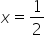

This Add-In shows how to experiment about how to align formulas (images) with a correct baseline. For example,
The inline formula: 
Output
Select a formula (image) and press one of the buttons
Tools
Info
manifest.xml manifest.localhost.xml
Word API Ooml format
Home url: